전산응용토목제도기능사 (2008-10-05 기출문제)
1과목: 토목제도(CAD)
1. 물-시멘트비가 55%이고, 단위 수량이 176Kg 이면 단위 시멘트량은?
- 273Kg
- 295Kg
- 320Kg
- 350Kg
(정답률: 57%)

2. 인장 이형철근의 겹칩이음 분류 중 배치된 철근량이 이음부 전체 구간에서 해석결과 요구되는 소요철근량의 2배 이상이고, 소요겹침 이음길이 내 겹침이음된 철근량이 전체 철근량의 1/2 이하인 경우에 해당되는 겹침이음은?
- A급 이음
- B급 이음
- C급 이음
- D급 이음
(정답률: 59%)
3. 그림과 같은 단철근 직사각형보에서 (인장)철근비는? (단, As=1520mm2, fck=24MPa)
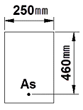
- 0.0432
- 0.0332
- 0.0232
- 0.0132
(정답률: 29%)
4. 골재의 표면수는 없고 골재알 속의 빈틈이 물로 차 있는 골재의 함수 상태를 무엇이라 하는가?
- 절대 건조 포화 상태
- 공기 중 건조 상태
- 표면 건조 포화 상태
- 습윤 상태
(정답률: 79%)
5. 철근과 콘크리트 사이의 부착에 영향을 주는 주요 원리와 거리가 먼 것은?
- 콘크리트와 철근 표면의 마찰 작용
- 시멘트풀과 철근 표면의 정착 작용
- 이형 철근 표면에 의한 기계적 작용
- 거푸집에 의한 압축 작용
(정답률: 68%)
6. 굵은 골재의 최대치수는 질량비로 몇 % 이상을 통과시키는 체 가운데에서 가장 작은 치수의 체눈을 체의 호칭치수로 나타낸 것인가?
- 80%
- 85%
- 90%
- 95%
(정답률: 60%)
7. 180° 표준갈고리는 구부린 반원 끝에서 철근지름의 최소 몇 배 이상을 연장 하여야 하는가?
- 2배 이상
- 3배 이상
- 4배 이상
- 5배 이상
(정답률: 54%)
8. 표준갈고리의 최소 내면 반지름을 두는 이유로 가장 적절한 것은?
- 철근을 잘 구부리기 위하여
- 작업을 편하게 하기 위하여
- 철근의 사용량을 줄이기 위하여
- 철근의 재질을 손상시키지 않기 위하여
(정답률: 55%)
9. 철근의 구부리기에 관한 설명으로 옳지 않은 것은?
- 모든 철근은 가열해서 구부리는 것을 원칙으로 한다.
- D38 이상의 철근은 구부림 내면반지름을 철근지름의 5배 이상으로 하여야한다.
- 콘크리트 속에 일부가 묻혀 있는 철근은 현장에서 구부리지 않는 것이 원칙이다.
- 큰 응력을 받는 곳에서 철근을 구부릴 때는 구부리는 내면 반지름을 더욱 크게 하는 것이 좋다.
(정답률: 59%)
10. 강도설계법에서 균형변형률 상태(균형보인 상태)를 올바르게 설명한 것은?
- 압축측 최외단 콘크리트의 응력은 fck이고, 철근의 변형률은 ES/fy에 도달한 상태
- 압축측 최외단 콘크리트의 변형률은 0.003이고, 철근의 변형률은 fy/ES에 도달한 상태
- 압축측 최외단 콘크리트의 변형률은 0.001이고, 철근의 변형률은 ES/fy에 도달한 상태
- 압축측 최외단 콘크리트의 응력은 0.75fck이고, 철근의 변형률은 fy/ES에 도달한 상태
(정답률: 81%)
11. 강섬유 보강콘크리트가 주로 사용되는 용도와 거리가 먼 것은?
- 도로 및 활주로의 포장
- 중성자선의 차폐 재료
- 터널 라이닝
- 프리케스트 콘크리트 제품
(정답률: 36%)
12. 보의 전단 응력에 의한 균열에 대비해 보강된 철근이 아닌 것은?
- 굽힘 철근
- 경사 스터럽
- 수직 스터럽
- 조립 철근
(정답률: 50%)
13. 흙에 접하거나 옥외의 공기에 직접 노출되는 현장치기 콘크리트에서 D16 이하의 철근 지름 16㎜ 이하의 철선이 사용될 때 최소 피복두께는?
- 20㎜
- 30㎜
- 40㎜
- 60㎜
(정답률: 55%)
14. 다음 중 강도 설계법의 기본 가정이 아닌 것은?
- 콘크리트 및 철근의 변형률은 중립축으로부터 거리에 반비례한다.
- 철근과 콘크리트 사이의 부착은 완전하며, 그 경계면에서 활동은 일어나지 않는다.
- 보의 극한 상태에서의 휨 모멘트를 계산할 때는 콘크리트의 인장강도는 무시한다.
- 보의 휨을 받기 전에 생각한 임의의 단면을 휨을 받아 변형을 일으킨 뒤에도 그대로 평면을 유지한다.
(정답률: 32%)
15. 인장을 받는 곳에 겹침이음을 할 수 있는 철근은?
- D25
- D38
- D41
- D51
(정답률: 73%)
16. 토목구조물 설계 시 하중을 주하중, 부하중, 특수하중으로 분류할 때 주하중에 속하는 것은?
- 제동하중
- 풍하중
- 활하중
- 원심하중
(정답률: 50%)
17. 슬래브의 종류에는 1방향 슬래브와 2방향 슬래브가 있다. 이를 구분하는 기준과 가장 관계가 깊은 것은?
- 부철근의 구조
- 슬래브의 두께
- 지지하는 경계 조건
- 기둥의 높이
(정답률: 38%)
18. 토목 구조물의 특징을 설명한 것으로 틀린 것은?
- 일반적으로 규모가 크다.
- 공용기간이 짧다.
- 다량생산이 아니다.
- 대부분 자연환경 속에 놓인다.
(정답률: 84%)
19. 옹벽의 역할을 가장 바르게 설명한 것은?
- 교량의 받침대 역할을 한다.
- 비탈면에서 흙이 무너져 내려오는 것을 방지하는 역할을 한다.
- 상하수도관으로 활용된다.
- 도로의 측구 역할을 한다.
(정답률: 71%)
20. 무근 콘크리트로 만들어지며 자중에 의하여 안정을 유지하는 옹벽의 종류는?
- 캔틸레버식 옹벽
- 중력식 옹벽
- 앞부벽식 옹벽
- 뒷부벽식 옹벽
(정답률: 73%)
2과목: 철근콘크리트
21. 강구조의 특징에 대한 설명으로 옳은 것은?
- 콘크리트에 비해 품질 관리가 어렵다.
- 재료의 세기, 즉 강도가 콘크리트에 비해 월등히 작다.
- 콘크리트에 비해 공사기간이 단축된다.
- 콘크리트에 비해 부재의 치수가 크게 된다.
(정답률: 52%)
22. 교각에 작용하는 상부 구조물의 하중을 지반에 안전하게 전달하기 위하여 설치하는 구조물은?
- 기둥
- 옹벽
- 슬래브
- 확대기초
(정답률: 40%)
23. 포스트텐션 방식에서 PS 강제가 녹스는 것을 방지하고, 또 콘크리트에 부착시키기 위해 시스 안에 시멘트 풀 또는 모르타르를 주입하는 작업을 무엇이라고 하는가?
- 그라우팅
- 덕트
- 프레시네
- 디비다그
(정답률: 78%)
24. 철근 콘크리트 구조물의 장점과 가장 거리가 먼 것은?
- 내구성이, 내화성, 내진성이 우수하다.
- 여러 가지 모양과 치수의 구조물을 만들기 쉽다.
- 다른 구조물에 비하여 유지 관리비가 적게 든다.
- 비교적 경량의 구조물을 만들 수 있다.
(정답률: 65%)
25. 하천, 계곡, 해협 등에 가설하여 교통소통을 위한 구조물을 무엇이라 하는가?
- 교량
- 옹벽
- 슬래브
- 기둥
(정답률: 80%)
26. 토목 구조물의 설계 개념과 가장 거리가 먼 것은?
- 작용 외력에 대한 구조물의 안정성
- 구조물 사용의 관리성과 내구성
- 토목 구조물로서의 희소적 가치
- 구조물 유지 보수의 경제성
(정답률: 75%)
27. 양안에 주탑을 세우고 그 사이에 케이블을 걸어 여기에 보강형 또는 봉강 트러스를 매단 형식의 교량은?
- 아치교
- 현수교
- 연속교
- 라멘교
(정답률: 60%)
28. 토목 구조물의 재료 선정 시 고려해야 할 사항이 아닌 것은?
- 구조물의 종류
- 재료 생산 업체
- 재료구입의 난이도
- 완성 후의 유지 관리비
(정답률: 46%)
29. 2개 이상의 기둥을 1개의 확대 기초로 지지하도록 만든 확대 기초는?
- 경사 확대기초
- 독립 확대기초
- 연결 확대기초
- 계단식 확대기초
(정답률: 71%)
30. 강도설계법에 대한 설명으로 틀린 것은?
- 파괴상태 또는 파괴에 가까운 상태에 있는 구조물의 계산상 강도를 공칭강도라 한다.
- 공칭강도(Sn)에 강도감소계수(ø)를 곱하여 설계강도를 나타낸다.
- 계수하중에 의해 계산된 부재의 강도를 소요강도라 한다.
- "설계강도 < 소요강도"로 단면을 결정하는 설계방법이다.
(정답률: 39%)
31. 도면의 작성 방법에서 원도를 그리는 순서로 가장 적절한 것은?
- 도면의 배치 → 선 긋기 → 도면의 구성 → 글자 및 기호쓰기 → 도면의 검토
- 도면의 구성 → 도면의 배치 → 선 긋기 → 글자 및 기호쓰기 → 도면의 검토
- 도면의 배치 → 도면의 구성 → 도면의 검토 → 선 긋기 → 글자 및 기호쓰기
- 도면의 구성 → 도면의 배치 → 도면의 검토 → 선 긋기 → 글자 및 기호쓰기
(정답률: 70%)
32. 도면에 사용되는 글자에 대한 설명 중 틀린 것은?
- 문장은 가로 왼쪽부터 쓰는 것을 원칙으로 한다.
- 글자의 크기는 높이로 나타낸다.
- 숫자는 아라비아 숫자를 원칙으로 한다.
- 글자는 수직 또는 수직에서 35° 오른쪽으로 경사지게 쓴다.
(정답률: 90%)
33. 제도용지 A2의 규격으로 옳은 것은?(단, 단위 ㎜)
- 841×1189
- 420×594
- 515×728
- 210×297
(정답률: 74%)
34. 도로평면도에서 선형요소를 기입할 때 교점을 나타내는 기호는?
- B.C
- E.C
- I.P
- T.L
(정답률: 50%)
35. 제도에서 투상법은 보는 방법과 그리는 방법을 일정한 규칙에 따르게 한 것으로서 여러 가지 종류가 있는데, 투상법의 종류가 아닌 것은?
- 정투상법
- 구조투상법
- 등각투상법
- 사투상법
(정답률: 68%)
36. 다음 선의 접속 방법으로 틀린 것은?
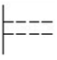
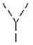
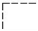
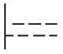
(정답률: 74%)
37. 도면의 작도에 대한 설명 중 틀린 것은?
- 그림은 간단히 하고, 중복을 피한다.
- 대칭적인 것은 중심선의 한쪽에 외형도, 반대쪽은 단면도로 표시할 수 있다.
- 경사면을 가진 구조물의 표시는 경사면 부분만의 보조도를 넣을 수 있다.
- 보이는 부분은 굵은 실선으로 하고, 숨겨진 부분은 가는 실선으로 하여 구분한다.
(정답률: 75%)
38. 그림에서 치수기입 방법이 틀린 것은?
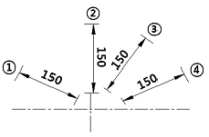
- ①
- ②
- ③
- ④
(정답률: 73%)
39. 일반적인 토목구조물 제도에서 도면배치에 대한 설명으로 바르지 않은 것은?
- 단면도를 중심으로 저판 배근도는 하부에 그린다.
- 단면도를 중심으로 우측에는 벽체 배근도를 그린다.
- 도면 상단에는 도면 명칭을 도면 크기에 알맞게 기입한다.
- 일반도는 단면도의 상단에 위치하도록 그린다.
(정답률: 38%)
40. 토목제도에 있어 치수는 특별히 명시하지 않으면 무슨 치수로 표시하는가?
- 완성치수
- 재료치수
- 재단치수
- 가상치수
(정답률: 54%)
3과목: 토목일반구조
41. 다음 중 실선으로 표시하지 않는 것은?
- 치수선
- 지시선
- 인출선
- 가상선
(정답률: 77%)
42. 도면을 그릴 때 좌표 원점으로부터의 거리를 나타내는 좌표방법은?
- 절대 좌표
- 상대 좌표
- 극 좌표
- 원 좌표
(정답률: 56%)
43. 다음 중 철근의 용접 이음에 해당하는 것은?
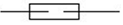
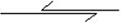
(정답률: 86%)
44. 철근의 표시법과 그에 대한 설명으로 바른 것은?
- ø13 - 반지름 13㎜의 원형철근
- D16 - 공칭지름 16㎜의 이형철근
- H16 - 높이 16㎜의 고강도 이형철근
- ø13 - 공칭지름 13㎜의 이형철근
(정답률: 61%)
45. 다음 중 콘크리트 재료의 단면 표시는?
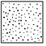
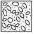
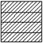
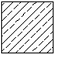
(정답률: 80%)
46. 입체 투상도에서 제3상한이 물체를 놓고 투상하는 방법의 투상법은?
- 제1각법
- 제3각법
- 축측 투상법
- 사투상법
(정답률: 72%)
47. 다음은 콘크리트 구조물의 도면 중 일반적으로 배근도라고도 하며, 현장에서는 이 도면에 따라 철근의 가공, 배치 등을 행하는 중요한 도면은?
- 일반도
- 평면도
- 구조도
- 상세도
(정답률: 54%)
48. 도면의 크기 중 A4 크기의 2배가 되는 도면은?
- A5
- A3
- B4
- B3
(정답률: 72%)
49. 윤곽 및 윤곽선에 대한 설명 중 틀린 것은?
- 윤곽의 나비는 A0 크기에 대하여 최소 20㎜인 것이 바람직하다.
- 윤곽의 나비는 A1 크기에 대하여 최소 10m인 것이 바람직하다.
- 그림을 그리는 영역을 한정하기 위한 윤곽선은 최소 0.5㎜ 이상 두께의 실선으로 그린다.
- 도면을 철하기 위한 구멍 뚫기의 여유는 최소 나비 20㎜(윤곽선 포함)로 표제란에서 가장 떨어진 왼쪽 끝에 둔다.
(정답률: 58%)
50. 재료 단면의 경계 표시 중 암반면을 나타내는 것은?
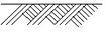
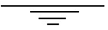
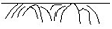
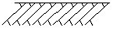
(정답률: 84%)
51. 다음에서 CAD시스템의 출력장치가 아닌 것은?
- 모니터
- 디지타이저
- 프린터
- 플로터
(정답률: 40%)
52. KS의 부문별 기호 중 토목건축 부문의 기호는?
- KS C
- KS D
- KS E
- KS F
(정답률: 89%)
53. 다음 중 철근의 기호 표시로 가장 적합한 것은? (단, 영문의 대소문자의 구분은 무시한다.)
- W : 기초
- H : 헌치
- I : 벽체
- K : 슬래브
(정답률: 60%)
54. 철근의 표시법으로 @400 C.T.C를 바르게 설명한 것은?
- 전장 40mm를 중심에서 절단 할 것
- 철근 지름이 40mm인 것을 배치할 것
- 철근과 철근 사이의 간격이 400mm가 되도록 할 것
- 철근을 400mm 지점에서 겹침이음 할 것
(정답률: 66%)
55. 국제 표준화 기구의 표준 규격 기호는?
- ISO
- JIS
- NASA
- ASA
(정답률: 85%)
56. 선의 굵기 비율 중 가는선 : 굵은 선 : 아주 굵은 선의 비율을 바르게 표현한 것은?
- 1 : 2 : 3
- 1 : 2 : 4
- 1 : 2 : 5
- 1 : 3 : 6
(정답률: 74%)
57. CAD 시스템을 도입하는 것으로 얻을 수 있는 효과 중 거리가 가장 먼 것은?
- 높은 정밀도
- 생산성 향상
- 신뢰성의 향상
- 사업의 타당성 향상
(정답률: 67%)
58. 도면제도에 있어서 등고선의 종류 중 지형표시의 기본이 되는 선으로 가는 실선으로 나타내는 것은?
- 계곡선
- 주곡선
- 간곡선
- 조곡선
(정답률: 48%)
59. 거푸집의 크기 가로×세로×높이가 3m×2m×1m인 경우 이 안에 콘크리트를 손실 없이 채워 넣을 경우 필요한 콘크리트의 양은 약 얼마가 되는가? (단, 콘크리트의 단위중량은 2.3t/m3로 가정한다.)
- 2.3t
- 5.2t
- 6.0t
- 13.8t
(정답률: 57%)
60. 토목제도의 단면 표시에서 자연석을 나타낸 것은 어느 것인가?
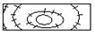
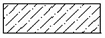
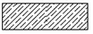
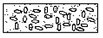
(정답률: 49%)
176Kg × 0.45 = 79.2Kg
따라서 단위 시멘트량은 79.2Kg이 됩니다. 하지만 보기에서는 단위 시멘트량이 320Kg인 것을 알 수 있습니다. 이는 단위 수량인 176Kg에 대한 시멘트의 비율이 45%일 때 필요한 시멘트량을 계산한 결과를 320Kg으로 변환한 것입니다.